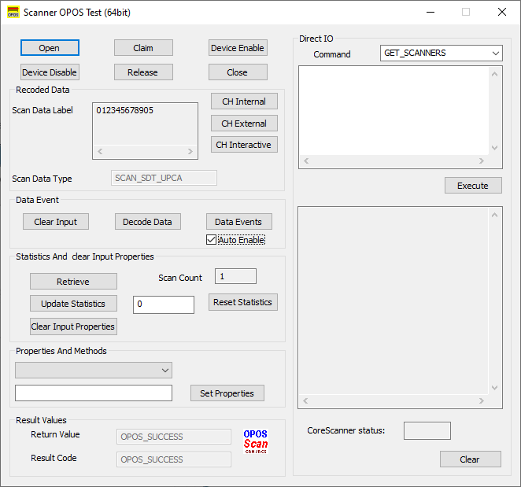

Overview
The Zebra Scanner OPOS Driver suite ships with a sample application that demonstrates all the OPOS operations on a connected Zebra scanner.
OPOS Sample Applicaton (Scanner OPOS Test Utility)
The Scanner OPOS Test Utility allows you to simulate an application communicating with the Zebra Scanner OPOS Driver. This utility displays scanned data received from the scanner through the Zebra Scanner OPOS Driver. The Zebra Scanner SDK includes source code for this VC++ test utility.
OPOS Test Utility Window Functionality
Table 1: Scanner OPOS Test Utility Button/Field Functionality
| Button / Field / Checkbox | Description | Values | Code Samples |
|---|---|---|---|
| Open | Open Method | ZEBRA_SCANNER | m_ctScanner.Open("ZEBRA_SCANNER") |
| Claim | Claim the device with time out value. | -1, Any integer starting from zero | m_ctScanner.Claim(1000) |
| Device Enable | Enable the scanner. Must enable before using scanners. | n/a | m_ctrScanner.SetDeviceEnabled(TRUE) |
| Device Disable | Disable the scanner. | n/a | m_ctrScanner.SetDeviceEnabled(FALSE) |
| Release | Release the scanner. | n/a | m_ctrScanner.ReleaseDevice() |
| Close | Close the scanner. | n/a | m_ctrScanner.CloseDevice() |
| Recorded Data | |||
| Scan Data Label | Label of the scan data. | n/a | m_ctrScanner.GetScanDataLabel() |
| Scan Data Type | Type of the scanned data. This is only a readable property. | n/a | m_ctrScanner.GetScanDataType() |
| CH Internal | Perform a Health check that does not physically change the device. The device is tested by internal tests to the extent possible. | n/a | m_ctrlScanner.CheckHealth(OPOS_CH_INTERNAL) |
| CH External | Performs a more extensive test that may change the device. When executed, the scanner may beep. | n/a | m_ctrlScanner.CheckHealth(OPOS_CH_INTERNAL) |
| CH Interactive | Not Supported | n/a | |
| Data Event | |||
| Clear Input | Clear method. Clears the input data. | n/a | m_ctrScanner.ClearInput() |
| Decode Data | Set decode data enable. | n/a | m_ctrScanner.SetDecodeData(1) |
| Data Events | Set data event enabled. Must enable data event to get data. | n/a | m_ctrlScanner.SetDataEventEnabled(1) |
| Auto Enable | Check box to automatically enable the scanner after a decode scan. | n/a | Refer to OPOS Scanner Sample Application source code provided with the SDK installation. |
| Statistics And Clear Input Properties | |||
| Retrieve | Retrieve statistic. | GoodScanCount | m_ctrlScanner.RetrieveStatistics(&test) |
| Reset Statistics | Reset statistics | GoodScanCount | m_ctrlScanner.ResetStatistics("GoodScanCount") |
| Update Statistics | Update statistics | GoodScanCount |
CString strTemp;
|
| Clear Input Properties | Clear input properties | n/a | m_ctrlScanner.ClearInputProperties() |
| Properties and Methods | |||
| Set Properties | Set the value of property to the given value. | n/a | m_ctrScanner.SetFreezeEvents(0) |
| Result Values | |||
| Return Value | Return value of the last function call. | This is only a readable property. | |
| Result Code | Return value of result code. | This is only a readable property. | m_ctrScanner.GetResultCode() |
| Direct IO | |||
| Command | Select the Direct IO command to be executed. | n/a | |
| Execute | Execute the selected command. | n/a | |
Viewing Bar Code Data
To view bar code data using the Scanner OPOS Test Utility:
- Scan the USB OPOS (Hand-held) bar code, SNAPI bar code or Wincor-Nixdorf RS-232 Mode B bar code on Scanner Configuration Bar Codes to configure the scanner for the correct communication protocol.
- Under the folder \Program Files\Zebra Technologies\Barcode Scanners\Scanner SDK\OPOS\Scanner OPOS\Sample Applications\bin, enter the sub-folder appropriate to the host architecture (x86 or x64) and run Scanner-OPOS-Test.exe to launch the Scanner OPOS Test Utility.
- Select
Open. The Open Service Object window appears. - Select
Okto use the Zebra Scanner Service Object that the Scanner SDK Installshield setup program loaded on the PC. - Select
Claim - Select
Device Enable - Select
Data Events - Select
Decode Data -
Scan the following sample bar code:

-
Select
Data Eventsto view the scanned UPC-A bar code data. The bar code data that the driver processed appears in the Scan Data Label and Scan Data Type boxes:Figure 2: Scanner OPOS Sample Application - Scan Data
- Select
Clear Inputto clear the data from the Scan Data Type and Scan Data Label boxes. - To perform a second test, scan another bar code.
Getting and Setting OPOS Properties
This utility allows getting and setting the OPOS properties of the Zebra Scanner OPOS Driver via the Properties And Methods drop-down list.
To get and set the OPOS properties of the Zebra Scanner OPOS Driver:
- Scan the USB OPOS (Hand-held) bar code, SNAPI bar code or Wincor-Nixdorf RS-232 Mode B bar code on Scanner Configuration Bar Codes to configure the scanner for the correct communication protocol.
- Under folder \Program Files\Zebra Technologies\Barcode Scanners\Scanner SDK\OPOS\Scanner OPOS\Sample Applications\bin, enter the sub-folder appropriate to the host architecture (x86 or x64) and run Scanner-OPOS-Test.exe to launch the Scanner OPOS Test Utility.
- Select
Open. The Open Service Object window appears. - Select
Okto use the Zebra Scanner Service Object that the SDK Installshield loaded on the PC. - Select
Claim - Select
Device Enable - Select a configurable (setable) property in the Properties And Methods drop-down list. You can configure some properties (e.g., AutoDisable, FreezeEvents); other properties are read only (e.g., ServiceObjectVersion, DataCount).
- The current value of the OPOS driver appears in the edit box below the property selected in the list box. The values 1 and 0 represent true and false, respectively.
- To change the configurable property, change the value in the edit box and select
Set Properties. This updates the property with the new value.
Creating a Custom OPOS Sample Application
You may use any programming language to create a custom OPOS sample application. However, Microsoft supported languages are recommended (e.g., Visual Basic, Visual C++ or C#).
To create a custom OPOS sample application:
- Create a project in the desired Microsoft Visual Studio development environment.
- Select Choose Toolbox Items… from the Tools menu.
- Select (check) OPOS Scanner Control from the COM Components tab.
- Add OPOSScanner.ocx to the project.
- Drag and drop to the form/Dialog window.
- Add a variable (handle) for the scanner control added to the form/Dialog window.
- Call Open(), Claim() methods [e.g., Open ("SYMBOL_SCANNER"); Claim (2000);].
- SetDeviceEnabled to TRUE.
- Set Freeze Events property to FALSE [e.g., SetFreezeEvents (FALSE)].
- SetDataEventsEnable to TRUE to get scan data events.
- When done, SetDeviceEnabled to FALSE, Release() and Close() the service.
- Call Device Disable property, release and close methods to close the connection.
Return Value and Result Code
When calling any method, check whether the return value is 0 (=OPOS_SUCCESS) to ensure the method is successful. Otherwise it returns an error code, which indicates the reason for the error. After setting property values, check that the result code returns 0 (=OPOS_SUCCESS), indicating success. If unsuccessful, it returns an error code.
Direct IO
The OPOS driver does not support any direct I/O functions to the scanner. However, an application developer can get management access to an RSM-ready scanner through the Zebra Scanner SDK. Refer to the Zebra Scanner SDK for Windows Developer’s Guide (p/n 72E-149784-xx) for more information.
Statistics Methods
The Zebra OPOS Driver supports the retrieveStatistics, resetStatistics, and updateStatistics methods. GoodScanCount is the only defined statistic in the Zebra OPOS Driver and can be used as a parameter for these methods.
Modified Claim Functionality
Model number, serial number and the Type (Scanner Host Mode) parameters are available in the system registry as configurable entries so that user can configure them according to the business requirement. Claiming a scanner compares the scanner details provided in system registry with the attached scanner properties. The claim is successful when they match.
Enter * to include anything for the particular entry. For example, enter * for the serial number to claim scanners with any serial number. Otherwise, the claim is successful only if the provided serial number and model number matches the present scanner.
For the model number and serial number, provide the exact value, or part of the string and a star (*). Do not enter a star (*) in the middle of a string; in this case, all data after star (*) is ignored. Provide a value and star as a model number (e.g., LS4208*) to accept all scanners starting with that model number (LS4208). Provide a star (*) for the serial number to accept all scanners regardless of serial number.
It is required to add the full name of each scanner type as a comma or space delimited list to enable the scanners to be Claimed. As an example, to include SNAPI scanners and IBM hand- held mode scanners the "Type" entry should be (USBIBMHID SNAPI). To include all scanner modes (Types) the value should be (ALL)
Since non-RSM scanners, including serial scanners in Wincor-Nixdorf RS-232 Mode B, do not provide the model number and serial number, to claim these scanners set a " * " to both ModelNumber and SerialNumber registry values.